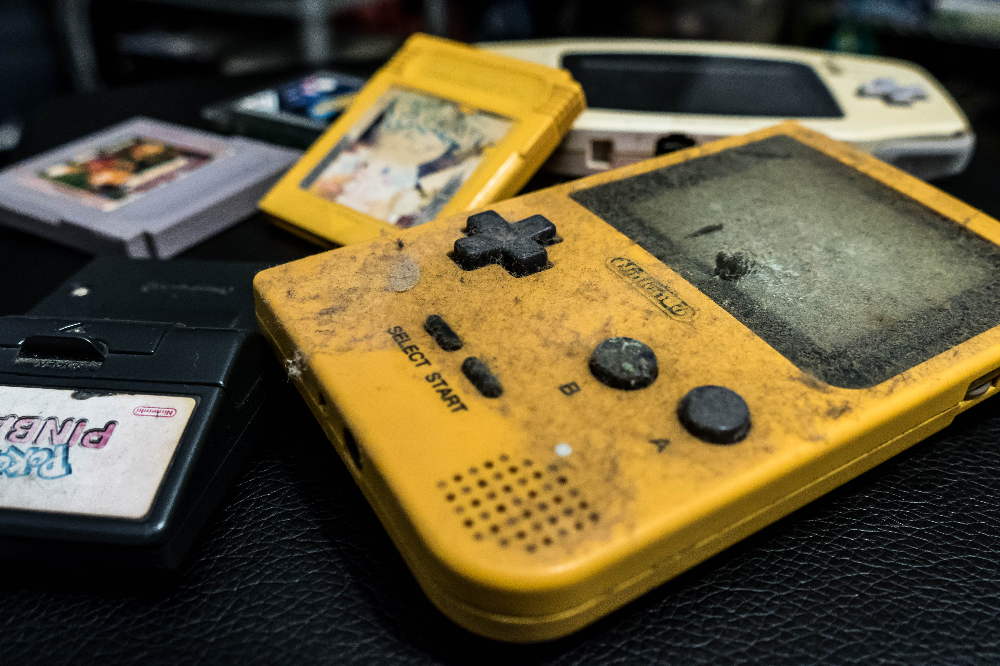

Nintendo was founded as Nintendo Karuta on 23 September 1889 by craftsman Fusajiro Yamauchi in Shimogyō-ku, Kyoto, Japan, as an unincorporated establishment, to produce and distribute Japanese playing cards, or karuta (かるた, from Portuguese carta ["card"]), most notably hanafuda (花札, "flower cards") The name "Nintendo" is commonly assumed to mean "leave luck to heaven", but the assumption lacks historical validation; it can alternatively be translated as "the temple of free hanafuda". Hanafuda cards had become popular after Japan banned most forms of gambling in 1882, though tolerated hanafuda. Sales of hanafuda cards were popular with the yakuza-ran gaming parlors in Kyoto. Other card manufacturers had opted to leave the market not wanting to be associated with criminal ties, but Yamauchi persisted without such fears to become the primary producer of hanafuda within a few years. With the increase of the cards' popularity, Yamauchi hired assistants to mass-produce to satisfy the demand. Even with a favorable start, the business faced financial struggle due to operating in a niche market, the slow and expensive manufacturing process, high product price, alongside long durability of the cards, which impacted sales due to the low replacement rate. As a solution, Nintendo produced a cheaper and lower-quality line of playing cards, Tengu, while also conducting product offerings in other cities such as Osaka, where card game profits were high. In addition, local merchants were interested in the prospect of a continuous renewal of decks, thus avoiding the suspicions that reusing cards would generate.
According to Nintendo, the business' first western-style card deck was put on the market in 1902, although other documents postpone the date to 1907, shortly after the Russo-Japanese War. Although the cards were initially meant for export, they quickly gained popularity not only abroad but also in Japan. During this time, the business styled itself as Marufuku Nintendo Card Co. The war created considerable difficulties for companies in the leisure sector, which were subject to new levies such as the Karuta Zei ("playing cards tax"). Nintendo subsisted and, in 1907, entered into an agreement with Nihon Senbai—later known as the Japan Tobacco—to market its cards to various cigarette stores throughout the country. A Nintendo promotional calendar from the Taishō era dated to 1915 indicates that the business was named Yamauchi Nintendo,[e] but still used the Marufuku Nintendo Co. brand for its playing cards.
Japanese culture stipulated that for Nintendo to continue as a family business after Yamauchi's retirement, Yamauchi had to adopt his son-in-law so that he could take over the business. As a result, Sekiryo Kaneda adopted the Yamauchi surname in 1907 and headed the business in 1929. By that time, Nintendo was the largest playing card business in Japan.
The growing demand for Nintendo's products led Yamauchi to further expand the offices, for which he acquired the surrounding land and assigned the production of cards to the original Nintendo building. Meanwhile, Yokoi, Uemura, and new employees such as Genyo Takeda, continued to develop innovative products for the company. The Laser Clay Shooting System was released in 1973 and managed to surpass bowling in popularity. Though Nintendo's toys continued to gain popularity, the 1973 oil crisis caused both a spike in the cost of plastics and a change in consumer priorities that put essential products over pastimes, and Nintendo lost several billion yen.
In 1974, Nintendo released Wild Gunman, a skeet shooting arcade simulation consisting of a 16 mm image projector with a sensor that detects a beam from the player's light gun. Both the Laser Clay Shooting System and Wild Gunman were successfully exported to Europe and North America. However, Nintendo's production speeds were still slow compared to rival companies such as Bandai and Tomy, and their prices were high, which led to the discontinuation of some of their light gun products. The subsidiary Nintendo Leisure System Co., Ltd., which developed these products, was closed as a result of the economic impact dealt by the oil crisis.
Yamauchi, motivated by the successes of Atari and Magnavox with their video game consoles, acquired the Japanese distribution rights for the Magnavox Odyssey in 1974, and reached an agreement with Mitsubishi Electric to develop similar products between 1975 and 1978, including the first microprocessor for video games systems, the Color TV-Game series, and an arcade game inspired by Othello. During this period, Takeda developed the video game EVR Race, and Shigeru Miyamoto joined Yokoi's team with the responsibility of designing the casing for the Color TV-Game consoles. In 1978, Nintendo's research and development department was split into two facilities, Nintendo Research & Development 1 and Nintendo Research & Development 2, respectively managed by Yokoi and Uemura.
Shigeru Miyamoto brought distinctive sources of inspiration, including the natural environment and regional culture of Sonobe, popular culture influences like Westerns and detective fiction, along with folk Shinto practices and family media. These would each be seen in most of Nintendo's major franchises which developed following Miyamoto's creative leadership.
The Wii U's successor in the eighth generation of video game consoles, the Nintendo Switch, was released in March 2017. The Switch features a hybrid design as a home and handheld console, Joy-Con controllers that each contain an accelerometer and gyroscope, and the simultaneous wireless networking of up to eight consoles. To expand its library, Nintendo entered alliances with several third-party and independent developers; by February 2019, more than 1,800 Switch games had been released. Worldwide sales of the Switch exceeded 55 million units by March 2020. In April 2018, the Nintendo Labo line was released, consisting of cardboard accessories that interact with the Switch and the Joy-Con controllers. More than one million units of the Nintendo Labo Variety Kit were sold in its first year on the market.
In 2018, Shuntaro Furukawa replaced Kimishima as company president, and in 2019, Doug Bowser succeeded Nintendo of America president Reggie Fils-Aimé. In April 2019, Nintendo formed an alliance with Tencent to distribute the Nintendo Switch in China starting in December.
In early 2020, Plan See Do, a hotel and restaurant development company, announced that it would refurbish the former Nintendo headquarters from the 1930s as a hotel, with plans to add 20 guest rooms, a restaurant, bar, and gym. The building is owned by Yamauchi Co., Ltd., an asset management company of Nintendo's founding family. The hotel later opened in April 2022, with 18 guest rooms, and named Marufukuro in a homage to Nintendo's previous name - Marufuku. In April 2020, Reuters reported that ValueAct Capital had acquired over shares in Nintendo stock worth US$1.1 billion over the course of a year, giving them an overall stake of 2% in Nintendo. Although the COVID-19 pandemic caused delays in the production and distribution of some of Nintendo's products, the situation "had limited impact on business results"; in May 2020, Nintendo reported a 75% increase in income compared to the previous fiscal year, mainly contributed by the Nintendo Switch Online service. The year saw some changes to the company's management: outside director Naoki Mizutani retired from the board, and was replaced by Asa Shinkawa; and Yoshiaki Koizumi was promoted to senior executive officer, maintaining its role as deputy general manager of Nintendo EPD.[187] By August, Nintendo was named the richest company in Japan. In June 2021, the company announced plans to convert its former Uji Ogura plant, where it had manufactured playing and hanafuda cards, into a museum tentatively named “Nintendo Gallery”, targeted to open by March 2024. In the following year, historic remains of a Yayoi period village were discovered in the construction site.
Nintendo is co-producing an animated film The Super Mario Bros. Movie alongside Universal Pictures and Illumination, with Miyamoto and Illumination CEO Chris Meledandri acting as producers, set for release in April 2023. In 2021, Furukawa indicated Nintendo's plan to create more animated projects based on their work outside the Mario film, and by June 29, Melendandri joined the board of directors as a non-executive outside director. According to Furukawa, the company's expansion toward animated production is to keep "[the] business [of producing video games] thriving and growing", realizing the "need to create opportunities where even people who do not normally play on video game systems can come into contact with Nintendo characters". That day, Miyamoto said that "[Melendandri] really came to understand the Nintendo point of view" and that "asking for [his] input, as an expert with many years of experience in Hollywood, will be of great help to" Nintendo's transition into film production. Later, in July 2022, Nintendo acquired Dynamo Pictures, a Japanese CG company founded by Hiroshi Hirokawa on 18 March 2011. Dynamo had worked with Nintendo on digital shorts in the 2010s, including for the Pikmin series, and Nintendo said that Dynamo would continue their goal of expanding into animation. Following the completion of the acquisition in October 2022, Nintendo renamed Dynamo as Nintendo Pictures.
In February 2022, Nintendo announced the acquisition of SRD Co., Ltd. (Systems Research and Development) after 40 years, a major contributor of Nintendo's first-party games such as Donkey Kong and The Legend of Zelda until the 1990s, and then support studio since. In May 2022, Reuters reported that Saudi Arabia's Public Investment Fund had purchased a 5% stake in Nintendo, and by January 2023, its stake in the company had increased to 6.07%. It was raised to 7.08% by February 2023, and in the same week by 8.26%, making it the biggest external investor.